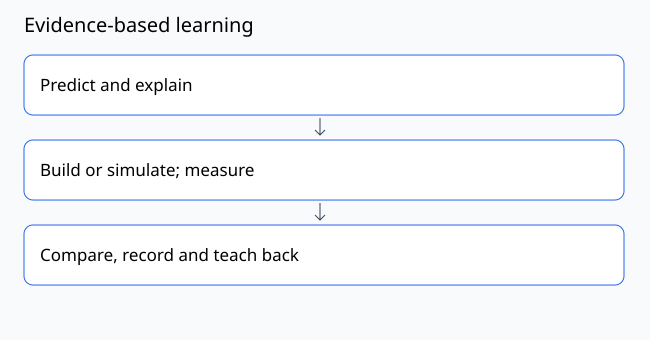

Lesson 01: Goals and placement
Course contents · Phase 00: Orientation and workshop setup
Objective
Choose a learning route and identify what you can already demonstrate.
Prerequisite: None. Bring a learning goal and a way to record observations..
Planning time: approximately 90 minutes including practice and recording. Split into short sessions as needed.
Concept
A goal names an observable result. “Understand tensegrity” is broad; “assemble a labeled prism and explain its load paths” can be checked. Prior experience matters only when it transfers to this task. Mathematics, making and teaching are separate skills, so placement should not be based on one total score.

Worked example
A learner can assemble a kit but cannot distinguish mass in kg from force in N. They may use making experience while still completing lessons 13–16. For Ivan, the default route ends in a tabletop solar sculpture and reproducible workshop.
Materials and setup
Paper, pencil, optional phone camera; no tools or software required.
Use a private copy of the experiment record. Assign a specimen or activity ID and record which values are measured, calculated or illustrative.
Predict and practice
Before acting, write the result you expect and one observation that could disagree with it.
- Write one intended beneficiary and one finished artifact.
- Without searching, explain tension and compression; sketch a structure; convert 100 mm to m; explain a fair comparison.
- Mark each task as independent, assisted or unfamiliar.
- Choose the solar-builder route in learning-paths/routes.json, or another listed route.
- Write the next two sessions and the evidence you will produce.
Expected behavior and interpretation
The record reveals different strengths rather than labeling the learner as simply beginner or advanced.
If your result differs, keep it. Recheck units, endpoint definitions, instruments and assumptions before changing the design. A mismatch can be the most useful evidence.
Troubleshooting and limits
Do not skip prerequisites because you recognize vocabulary. Demonstrate the task or keep the lesson.
Teach-back quiz
- What makes a goal assessable?
- Does strong craft ability imply statics competence?
- What is this course’s first milestone?
Facilitator answer key — attempt the questions first.
Evidence to submit
A one-page personal brief with route, placement evidence and two session dates.
Include your prediction, setup, results with units or criteria, and one limitation. Use the rubric: demonstrate each applicable dimension at level 2 or above before progressing. Numerical examples count as calculation evidence; they are not physical test results.
Facilitator adaptation
Offer a sketch, demonstration or pointing response as alternatives to speech. Provide pre-labeled parts, shorter sessions or a quiet workspace if chosen by the learner. Preserve the objective while adapting unnecessary task demands.
Reading and provenance
See source notes. This lesson is original course material. Hypothetical numbers are teaching examples; no field deployment or institutional endorsement is implied.